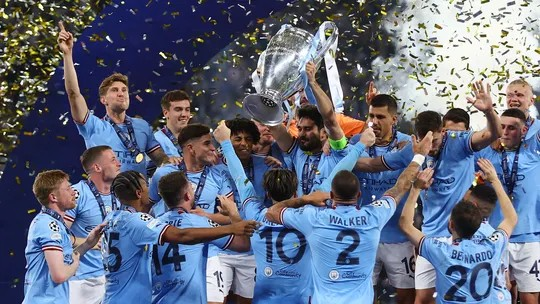
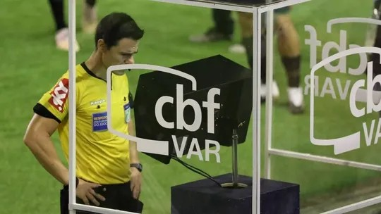
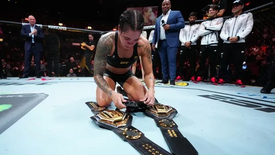
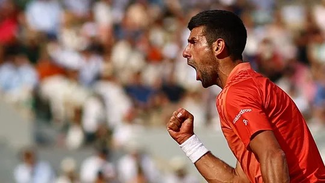
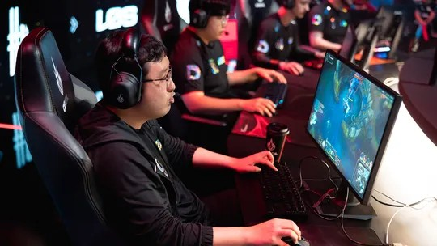

Champions League
Manchester City celebrará título da Champions
Evento na cidade de Manchester será nesta segunda-feira

Série A
Ranking do VAR no Brasileirão: Bahia lidera só com decisões favoráveis, já Cruzeiro é último
Veja os clubes com mais mudanças de decisão a favor e contra após consulta ao árbitro de vídeo

Combate
Amanda Nunes projeta futuro na luta: "Posso tornar outra lutadora campeã"
Recém-aposentada, brasileira pensa em trabalhar à beira do cage após um período de descanso e exalta apoio da esposa, Nina: "Ter uma parceira como ela foi o que me tornou boa"

Tênis
Opinião: Djokovic aniquila física e mentalmente seus adversários
A pressão que o sérvio exerce contra a nova geração vence os jogos antes mesmo de começarem
